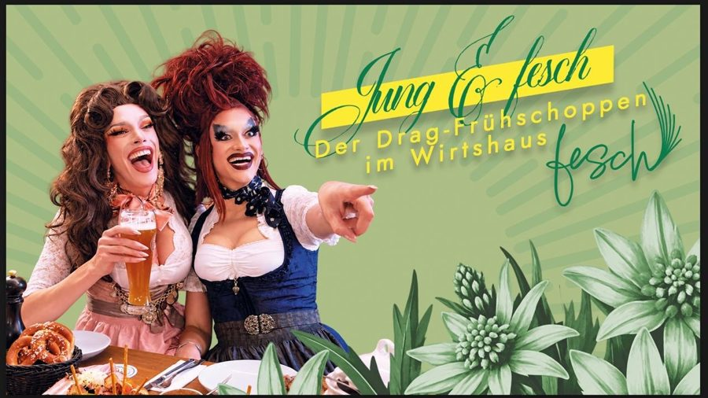

Jung & Fesch: The Drag Frühschoppen
About the Frühschoppen
With Jung & Fesch, Magda von Pfeffer of DUCT TAPE and Na’Eve bring a drag Frühschoppen, the Bavarian late-morning get-together, to Munich. At Wirtshaus fesch on Müllerstraße, Bavarian tavern culture meets queer joy.
The programme mixes tradition and cabaret, theatre, live vocals and lip-sync, sometimes cheeky, sometimes quirky, sometimes surprising.
The ticket includes a Brotzeit platter with vegetarian and vegan options and a Weißwurst breakfast.
The Frühschoppen takes place on 8 November and 13 December 2026, both Sundays from 10:30 am to 1:30 pm. Everyone is welcome, young or old, queer or not.
Line-up on both dates
Magda von Pfeffer • Na’Eve